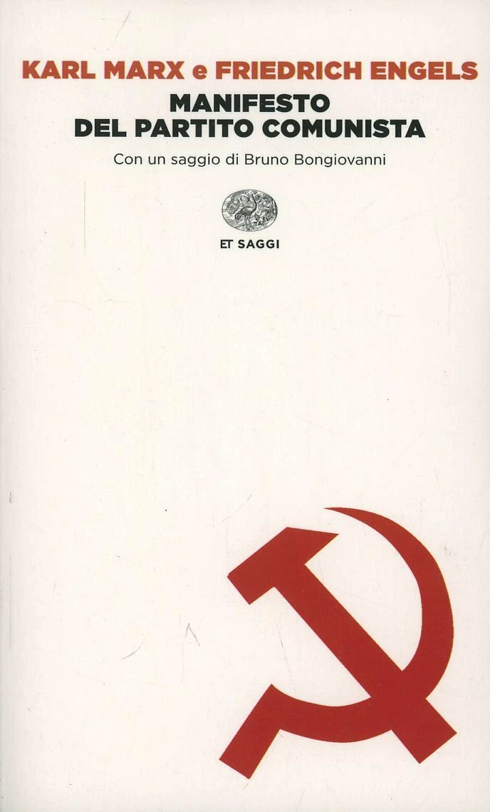

12:03 · 2 OPERE
Qualche pensiero su Karl Marx e su alcuni paradossi della storia.
Il filo del discorso
Una frase attribuita a Marx sulla differenza fra lavoro manuale e filosofia introduce il confronto con il pensiero meccanico dell’Ottocento. Dr Divago considera la teoria marxiana come una risposta di ampio respiro al mondo della produzione industriale, ma anche come una descrizione dalla quale il capitalismo può apprendere. Il percorso passa alla termodinamica e alla fisica del Novecento per discutere la crisi delle rappresentazioni rigidamente deterministiche. La conclusione propone il paradosso di un pensiero critico che contribuisce a dare coerenza al sistema che analizza.
I libri nel discorso

Il capitale
Note sul riferimento
Copertina: Editori Riuniti · Libro primo
Il titolo è nominato nel confronto fra Marx e Darwin.

Manifesto del Partito comunista
Identificazione probabile
Note sul riferimento
Copertina: Einaudi · ET Saggi · 2014
Copertina dell’edizione Einaudi del Manifesto, che comprende anche altri scritti e materiali. Nel video il rinvio al testo resta un’allusione probabile, senza identificazione dell’edizione.
La formula dello spettro che si aggira per l’Europa allude probabilmente all’inizio del Manifesto; titolo non pronunciato.